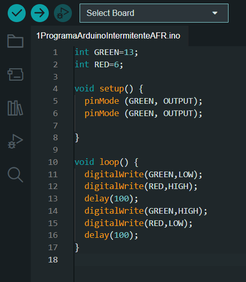
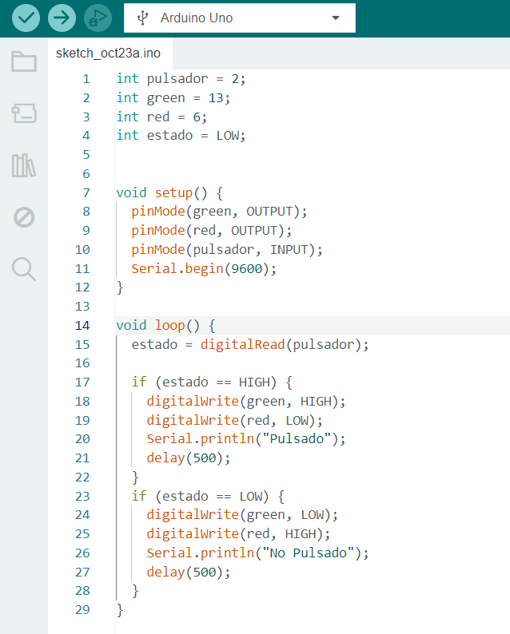
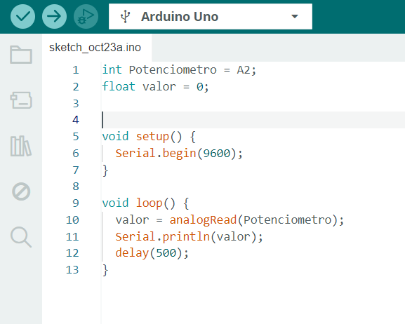
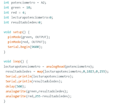
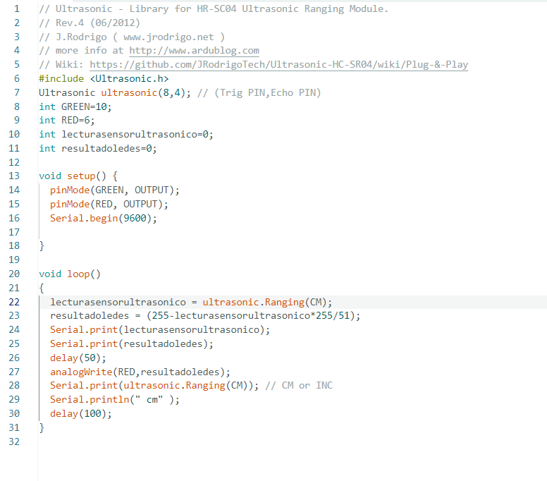

Alejandro Fernández Romacho. Programa doble intermitente(CC BY-NC-SA)
Explicación
Este es el “hola mundo” de la programación de arduino y lo que hicimos fue conectar dos leds a la placa de prototipado junto con dos resistencias y de ahí los conectamos mediante cables a la placa de arduino uno y ya se programa en el arduino IDE haciendo un intermitente entre los ledes.
Continuando con los pasos previos en este lo que hicimos fue conectar un pulsador a la placa de prototipado y de ahí a la placa de arduino uno, luego se hizo un breve programa que lo que hacía era que había uno de los dos leds encendido y si el pulsador era pulsado se encendía el otro led y el que estaba encendido se apagaba.
Programa pulsador

Lianet Serrano Vázquez. Programa pulsador(CC BY-NC-SA)
En esta práctica lo que hicimos fue conectar el potenciómetro a la placa de arduino uno y después programamos el potenciómetro para que en el monitor serie el potenciómetro adquiera los valores y los redacte en el monitor serie.
Video
Lianet Serrando Vázquez. Video potenciómetro(CC BY-NC-SA)
Programa potenciómetro

Lianet Serrano Vázquez. Programa potenciómetro(CC BY-NC-SA)

LIanet Serrando Vázquez. Programa potenciómetro(CC BY-NC-SA)
Explicación
Primero que todo basándonos en los anteriores declarar las variables es más fácil declarar solo se le agregan otras dos variables de tipo entero para la lecturapotenciometro y resultadoledes. En el void setup se hace lo mismo que en los anteriores , por otro lado en el void loop primero que todo decimos que la lecturapotenciometro es la lectura analogica de potenciometro , resultadoledes es el mapeado de lecturapotenciometro con los números 0,1023,0, 255. Luego una escritura en el monitor serie para la lecturapotenciometro y otra para resultadoledes , un delay de 500 milisegundos y la escritura analogica al led green resultadoledes y al led red 255- resultadoledes ya que tienen que ser una contrario a la otra.
Video
Lianet Serrando Vázquez. Video ledes con potenciómetro(CC BY-NC-SA)
Control de LED a través del sensor de ultrasonidos
Se le agrego el sensor ultrasonic con sus dos pines un cable a GND y a 5v
Programa

Lianet serrano y Alejandro Fernandez
Explicación
En el siguiente paso previo , primero que todo el sensor utrasonic es un sensor que mediante ondas que suelta por el lado TRIG y las recibe por el lado Echo. Dicho lo anterior lo primero que vamos a hacer es incluir(#include) la libreria de ultrasonic anteriormente descargada . Como antes dije ulrasonic cuenta con Trig y Echo y fue lo que primero declaramos 8 y 4 respectivamente. luego como aprendimos en los anteriores pasos previos declaramos una variable para los ledes ( necesitamos solo uno ) , a continuación una variable entera con valor de cero para la lectura de el sensor ultrasónico y para los resultadoledes. En el void setup declaramos (pinMode) que los ledes son de salida como anteriormente vimos y un Serial.begin(9600) que es para comenzar la comunicación a traves de el monitor serie y el número son 9660 baudios .Luego en el void loop ponemos que la lecturasensorultrasonico es la ultrasonic.Ranging(CM) y que el resultadoledes sea 255 - lecturasensorultrasonico por 255 entr 51. Una escritura en el monitor serie de lecturasensorultrasonico y resultadoledes, un delay de 50 milisegundos. Y por ultimo una escritura analogica que en el led RED va a ser el resultadoledes
Siguiente paso previo primero que todo como en el anterior paso vamos a declarar las dos librerías , la de ultrasonic y la de servomotor. Después de eso hacemos un programa que mide la distancia que detecta el sensor cuando se acerca un objeto o algo y cuando lo detecta el servomotor se mueve 180 grados.
Video
Lianet Serrando Vázquez. Video servomotor(CC BY-NC-SA)
.jpg "Montaje arduino")
.jpg "Placa de prototipado")